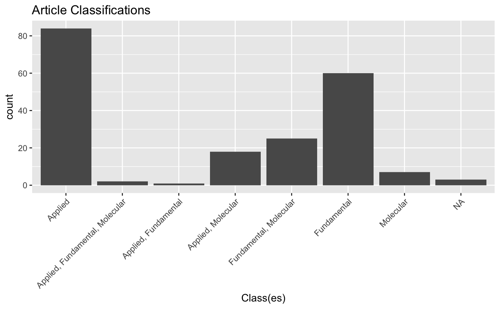

Initial Analysis
Adam H Sparks
2018-06-06
Source:vignettes/initial_analysis.Rmd
initial_analysis.RmdVisualise evaluations
Article classes
ggplot(rrpp, aes(x = art_class)) +
geom_histogram(stat = "count") +
xlab("Class(es)") +
scale_x_discrete(labels = c("Applied","Applied, Fundamental, Molecular","Applied, Fundamental","Applied, Molecular","Fundamental, Molecular", "Fundamental", "Molecular", "NA")) +
theme(axis.text.x = element_text(angle = 45, hjust = 1)) +
ggtitle("Article Classifications")
#> Warning: Ignoring unknown parameters: binwidth, bins, pad